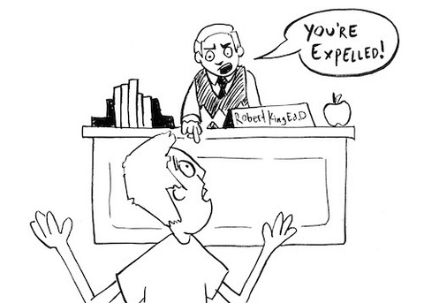

Look. Learn. Laugh!

Common Law
Common law is unwritten law that originated hundreds of years ago, going all the way back to England, where it then settled here in the states. A long time ago, kings were able to make up laws.
Fortunately, laws change over time, and we don’t have kings in the United States anymore.
Statutory Law
Unlike common law, statutory law is written law that has been codified.
This Public Policy is established by our legislators.
Preponderance of the Evidence
One of the standards of proof in civil/tort law used in a court of law.
It means “more probable than not” or “more true than not true” (51% true vs. 49% not true).
Clear and Convincing
The other standard of proof in civil/tort law, used in a court of law. In order to win the case, it must be substantially more probable than not.
Click Picture For A Story!